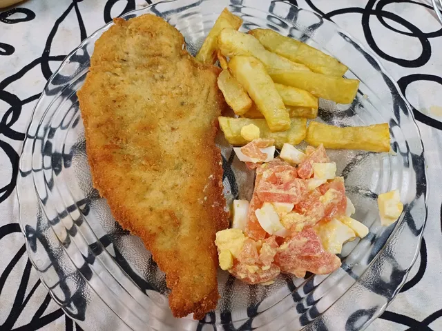

Milanesa de pollo con papas fritas y ensalada

Descripcion
Una deliciosa milanesa de pollo empanada y dorada, acompañada de papas fritas crocantes y una ensalada fresca.
Una comida clásica, sencilla y llena de sabor, ideal para disfrutar en familia.
Ingredientes
- 500 gr suprema de pollo
- 2 huevos+2 para la ensalada
- C/n pan rallado
- Sal,provenzal
- 500 gr papa
- 1 zanahoria
- 2 remolacha
- 1 tomate
Preparacion
- Cortar la suprema en bifes, en un bowl mezclar los huevos junto con la sal y el provenzal, colocar los bifes,dejar marinar unos minutos
- Poner el pan rallado en una bandeja o en otro recipiente similar, pasar los bifes de a uno por vez
- Una vez listas las milanesas podemos optar por dos formas de cocción : 1) freidora de aire, precalentar por 3 minutos, rociar las milanesas con aceite en aerosol, cocinar 200 grados por 15 minutos, dar vuelta a la mitad del tiempo o 2) directamente freír en un sartén con abundante aceite, de ambos lados, sacar y dejar sobre un papel de cocina para que absorba el excedente
- Para la guarnición: cortar la papa y zanahoria en cubos pequeños, hacer hervir por 15 minutos en agua con sal,reservar. Luego,los huevos por 12 minutos, la remolacha una hora aproximadamente, pasado el tiempo, picar la remolacha y los huevos a gusto.
- Para las papas fritas : cortar las papas a gusto, rociar con aceite vegetal,colocar en la freidora de aire,200 grados por 20 minutos
- Servir a gusto con ensalada y/o papas fritas.
Home